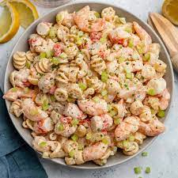

Shrimp Pasta Salad

Description
Very light flavor and low in calories.
Originally meant to be a side dish I made some healthy substitutions and added shrimp.
I usually serve with asparagus, the entire family loves it.
Ingredients
Dressing:
- ¼ cup Greek yogurt
- ¼ cup chicken broth
- 2 tablespoons lemon juice
- 1 tablespoon Dijon mustard
- 2 teaspoons minced garlic
- 1 teaspoon ground black pepper
Pasta:
- 10 ounces penne pasta
- 40 medium shrimp, or more to taste
- 2 tablespoons olive oil, or more to taste
- salt and ground black pepper to taste
- ½ cup chopped scallions (green onions)
- 1 teaspoon kosher salt
- ½ cup shredded Cheddar cheese
- ½ lemon, thinly sliced
Steps
- Whisk yogurt, chicken broth, lemon juice,
Dijon mustard, garlic,
and 1 teaspoon black pepper together in a bowl until dressing is smooth.
- Bring a large pot of lightly salted water to a boil;
add penne and cook, stirring occasionally, until tender yet firm to the bite, about 8 minutes.
Drain and rinse under cold water until pasta is slightly cooled.
- Preheat oven to 450 degrees F (230 degrees C).
- Toss shrimp and 2 tablespoons olive oil together in a bowl; season with salt and pepper.
Transfer to a glass baking dish.
- Bake in the preheated oven until shrimp are bright pink and cooked through,
10 to 12 minutes.
- Toss pasta with dressing in a bowl. Add shrimp and scallions;
season with 1 teaspoon kosher salt and more pepper.
Garnish pasta salad with Cheddar cheese and lemon slices.